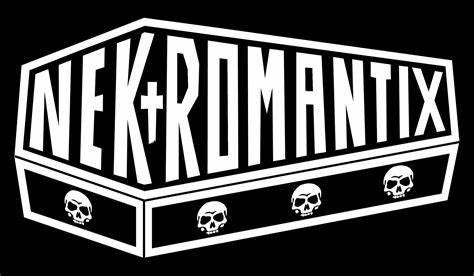

Nekromantix

Nekromantix is a psychobilly band from Denmark, formed in 1989. They are known for their unique sound, which combines horror themes, a fast rhythm, and their signature 'coffin' double bass. Their live performances are a true show with theatrical elements.